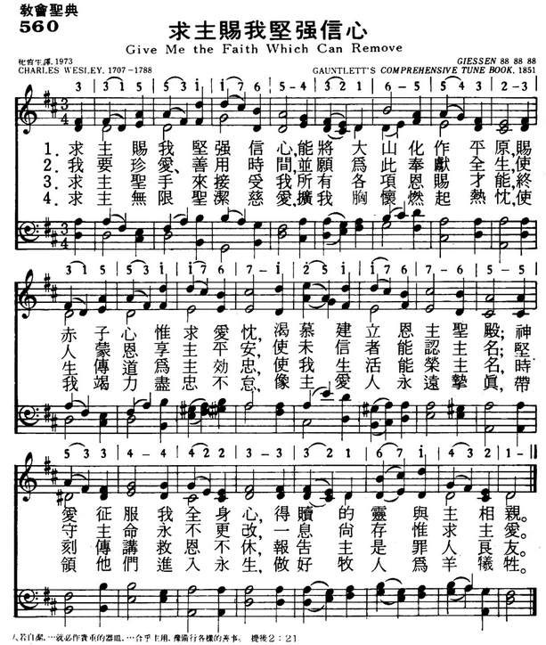

|
|
|
|
1. Give me the faith which can remove 2. I would the precious time redeem, 3. My talents, gifts, and graces, Lord, 4. Enlarge, inflame, and fill my heart |
560求主赐我坚强信心
1.求主赐我坚强信心，能将大山化作平原，
赐赤子心惟求爱忱，渴慕建立恩主圣殿； 神爱征服我全身心，得赎的灵与主相亲。 2.我要珍爱、善用时间，并显为此奉献全生， 使人蒙恩享主平安，使未信者能认主名； 坚守主命永不更改，一息尚存惟求主爱。 3.求主圣手来接受我所有各项恩赐才能， 终生传道为主效忠，使我生活能荣主名， 时刻传讲救恩不休，报告主是罪人良友。 4.求主无限圣洁慈爱，扩我胸怀燃起热忱， 使我竭力尽忠不怠，像主爱人永远挚真， 带领他们进入永生，做好牧人为羊牺牲。 |
|
https://www.mred365.cn/szxg/7563.html
 |
|
|
|
|

| Text: | Give Me the Faith Which Can Remove |
| Author: | Charles Wesley |

Tune Information
| Title: | GIESSEN |
| Meter: | 8.8.8.8.8.8 |
| Incipit: | 33155 31176 54321 |
| Key: | D Major |
| Source: | Gauntlett's Comprehensive Tune Book, 1851 |
| Copyright: | Public Domain |
| Tune: | GIESSEN |
| Composer: | Henry J. Gauntlett |
| Short Name: | Henry J. Gauntlett |
| Full Name: | Gauntlett, Henry J. (Henry John), 1805-1876 |
| Birth Year: | 1805 |
| Death Year: | 1876 |
Henry J. Gauntlett (b. Wellington, Shropshire, July 9, 1805; d. London, England, February 21, 1876) When he was nine years old, Henry John Gauntlett (b. Wellington, Shropshire, England, 1805; d. Kensington, London, England, 1876) became organist at his father's church in Olney, Buckinghamshire. At his father's insistence he studied law, practicing it until 1844, after which he chose to devote the rest of his life to music. He was an organist in various churches in the London area and became an important figure in the history of British pipe organs. A designer of organs for William Hill's company, Gauntlett extended the organ pedal range and in 1851 took out a patent on electric action for organs. Felix Mendelssohn chose him to play the organ part at the first performance of Elijah in Birmingham, England, in 1846. Gauntlett is said to have composed some ten thousand hymn tunes, most of which have been forgotten. Also a supporter of the use of plainchant in the church, Gauntlett published the Gregorian Hymnal of Matins and Evensong (1844).
Bert Polman
Give me the faith which can remove
Give me the faith which can remove. Charles Wesley* (1707-1788). First published in Hymns and Sacred Poems (1749), as part of a hymn of eight 6-line stanzas, which began ‘O that I was as heretofore’. The full original text is printed in Frank Baker’s Representative Verse of Charles Wesley (1962), pp. 108-9. The eight-stanza hymn is of considerable interest. It was in a section entitled ‘Hymns for a Preacher of the Gospel’ and began with two stanzas in which Wesley remembered his initial evangelical enthusiasm. It was a time when he would metaphorically rush through every open door: O that I was as heretofore When first sent forth in Jesu’s Name I rush’d thro’ every open Door